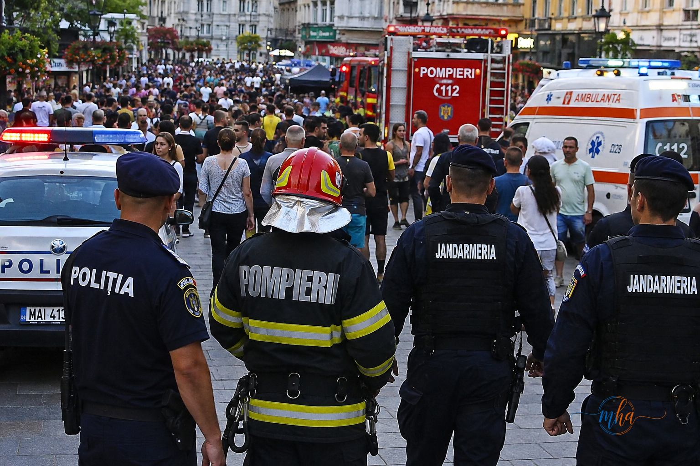
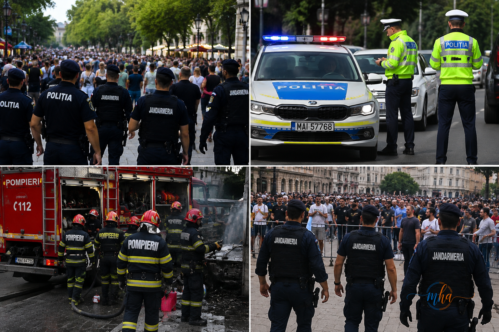
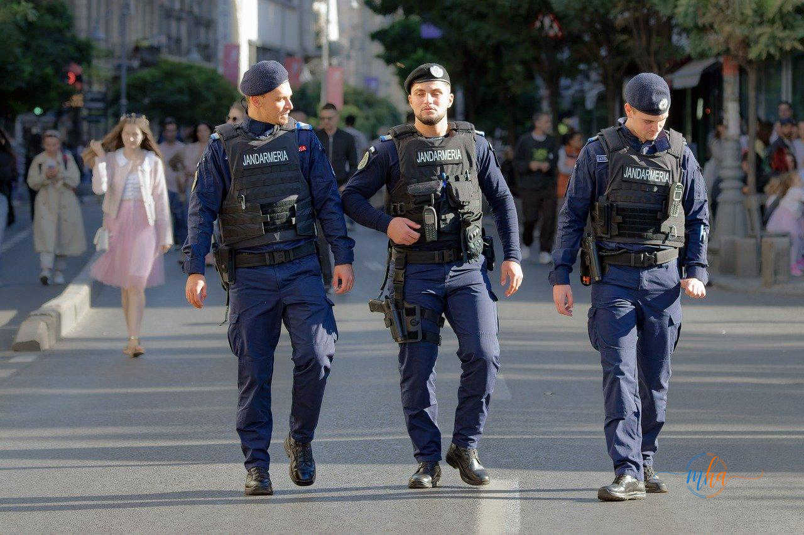

Sfânta Maria 2026: Poliția, Jandarmeria și Pompierii, mobilizați pentru siguranța cetățenilor. Ce măsuri au fost pregătite
Autoritățile au pregătit un dispozitiv amplu de ordine și siguranță publică pentru perioada sărbătorii Adormirea Maicii Domnului – Sfânta Maria, una dintre cele mai importante sărbători din calendarul ortodox. Polițiștii, jandarmii, pompierii și echipajele medicale vor fi prezenți în teren pentru prevenirea incidentelor, menținerea ordinii publice și intervenția rapidă în cazul producerii unor situații de urgență.
Sărbătoarea Sfintei Maria aduce, în fiecare an, un număr important de persoane în zonele unde sunt organizate manifestări religioase, evenimente publice, activități culturale sau întâlniri de familie. În acest context, autoritățile acordă o atenție deosebită siguranței participanților și prevenirii evenimentelor nedorite.
Polițiștii, prezenți în zonele aglomerate
Polițiștii vor desfășura acțiuni pentru prevenirea și combaterea faptelor antisociale, precum și pentru menținerea unui climat de siguranță în spațiile publice.
O atenție deosebită este acordată traficului rutier, în condițiile în care perioada sărbătorii poate genera valori ridicate de trafic pe principalele drumuri și în apropierea localităților unde sunt organizate evenimente.
Echipajele de poliție rutieră vor urmări respectarea regulilor de circulație, prevenirea accidentelor și identificarea conducătorilor auto care reprezintă un pericol pentru ceilalți participanți la trafic.
Șoferii sunt sfătuiți să circule cu prudență, să adapteze viteza la condițiile de drum, să păstreze distanța regulamentară între autovehicule și să nu conducă dacă au consumat băuturi alcoolice sau alte substanțe care afectează capacitatea de a conduce.
Jandarmii asigură ordinea publică
Și jandarmii vor fi mobilizați în zonele în care sunt așteptate aglomerări de persoane.
Misiunile acestora vizează în principal asigurarea ordinii publice, prevenirea faptelor antisociale și intervenția în situațiile în care este necesară restabilirea climatului de siguranță.
Forțele de ordine recomandă participanților la evenimente să manifeste calm și responsabilitate, să respecte indicațiile jandarmilor și polițiștilor și să evite conflictele sau comportamentele care pot pune în pericol siguranța celor din jur.
Părinții sunt sfătuiți să acorde o atenție suplimentară copiilor în zonele foarte aglomerate și, în cazul în care aceștia se pierd de grup, să solicite imediat sprijinul forțelor de ordine.
Pompierii și echipajele de intervenție, pregătite pentru situații de urgență
Pompierii vor avea, la rândul lor, misiuni importante în această perioadă.
În zonele în care sunt organizate activități cu public numeros, prevenirea incendiilor și asigurarea condițiilor de intervenție reprezintă priorități.
Echipajele de intervenție sunt pregătite să acționeze în cazul producerii unor incendii, accidente sau alte situații care pot pune în pericol viața și bunurile oamenilor.
Autoritățile atrag atenția și asupra respectării regulilor de prevenire a incendiilor, în special în cazul utilizării focului deschis, a instalațiilor electrice sau a altor surse de foc în apropierea zonelor aglomerate.
Recomandările autorităților pentru cei care participă la evenimente
Pentru ca sărbătoarea Sfintei Maria să se desfășoare în condiții de siguranță, autoritățile recomandă cetățenilor să respecte câteva măsuri simple, dar importante.
Persoanele care participă la manifestări religioase sau evenimente publice sunt sfătuite să evite zonele în care se formează aglomerații excesive și să respecte căile de acces și evacuare.
De asemenea, conducătorii auto trebuie să fie atenți la pietoni, în special în apropierea bisericilor, zonelor comerciale și a spațiilor unde sunt organizate evenimente.
În cazul apariției unei situații de urgență, cetățenii trebuie să apeleze numărul unic 112 și să ofere operatorului informațiile necesare pentru localizarea și evaluarea rapidă a situației.
Sfânta Maria 2026, sub semnul siguranței
Prin măsurile pregătite, autoritățile urmăresc ca perioada sărbătorii Adormirea Maicii Domnului să se desfășoare fără incidente și ca oamenii să se poată bucura de această zi în condiții de siguranță.
Poliția, Jandarmeria, pompierii și echipajele medicale vor acționa coordonat, atât pentru prevenirea incidentelor, cât și pentru intervenția rapidă atunci când situația o impune.
Mesajul autorităților pentru cetățeni este unul simplu: respectarea regulilor, atenția și responsabilitatea pot preveni situațiile neplăcute și pot contribui la o sărbătoare liniștită pentru întreaga comunitate.
Dacă observați o situație care poate pune în pericol viața, sănătatea sau siguranța persoanelor, nu ezitați să solicitați sprijinul autorităților prin numărul unic de urgență 112.
Galerie foto


